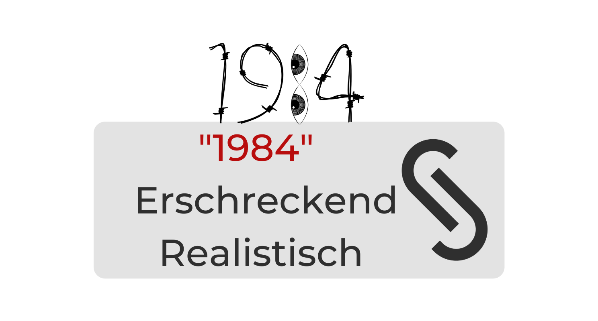

"1984": Erschreckend Realistisch!

Eric Arthur Blair, besser bekannt unter seinem Pseudonym George Orwell, ist einer der bekanntesten Romanschriftsteller des 20. Jahrhunderts. Viele seiner Werke enthalten heftige Gesellschaftskritik und antitotalitäre Themen, die Jung und Alt damals wie heute zum Nachdenken anregen. Eines von Orwells populärsten Werken ist sicherlich seine antiutopische, totalitäre Welt in "1984", in dem er die Idee des "Überwachungsstaat" bereits erschreckend realitätsnah vorhersagte.
Die Welt in "1984"
Der dystopische Roman "1984" erzählt von einer fiktiven Welt, die nach einem Krieg in drei Teile aufgeteilt ist. Das Buch spielt in Ozeanien, wo ein brutales Regime ("Die Partei") herrscht, das nicht nur den gesamten Reichtum, sondern effektiv auch den freien Willen und das freie Denken jedes Bürgers kontrolliert. In dieser Welt lebt der Protagonist Winston Smith, ein gewöhnlicher Arbeiter (engl. "Proles"), der in der Archivabteilung des "Ministeriums für Wahrheit" arbeitet. Die Aufgabe der Archivabteilung ist die Überarbeitung der Geschichte, damit sie die Ideale der Partei vermittelt. George Orwell schreibt zu diesem Grundsatz der Propaganda:

Winston führt diesen Job sehr sorgfältig aus, kann sich aber selbst nicht mit dem autoritären Regime identifizieren und spürt im Laufe des Buches eine immer stärkere Ablehnung gegen die Partei. Als kleinen Akt des Trotzes vertraut er sich seinem Tagebuch an, in dem er seine Gedanken aufschreibt und einige systemkritische Kommentare hinterlässt, die ihm später zum Verhängnis werden. Im laufe des Buches trifft Winston zwei Figuren, die die weitere Geschichte stark prägen: O'Brien, ein Mitglied der inneren Partei, und Julia aus der "Belletristikabteilung". Zuerst vermutet Winston in Julia ein Spitzel, bis sie ihm heimlich einen Zettel mit der Aufschrift "Ich liebe dich" zusteckt. Liebe wird von der Partei geächtet, weshalb die beiden in den Fokus der Überwachung geraten und schließlich verhaftet werden.
Beide werden in Haft misshandelt, psychischem Terror ausgesetzt und mit härtesten Methoden der Gehirnwäsche unterzogen. Nach zahlreichen Folterereignissen gelangen beide Charaktere (Winston und Julia) in das berüchtigte "Zimmer 101", in dem beide mit ihren größten Ängsten konfrontiert werden. Winston bekommt einen Käfig mit einer Ratten auf den Kopf gedrückt, die durch ein Metallgitter von ihm getrennt werden. Unter dem großen Druck wird er schließlich dazu gebracht, Julia zu verleumden, was als Zeichen für den Bruch seines Willens gewährtet wird. Er wird daher in die "Freiheit" entlassen, in der er schlussendlich als systemtreues Glied funktioniert.
"1984" im Jahr 2020
1984 ist heute ein weit bekanntes und verbreitetes Werk, das oft im Zusammenhang mit Datenschutz und totalitären Staaten zitiert wird. Dies liegt sicherlich daran, dass Orwell mit seinem Roman ein Werk geschaffen hat, dass viele Parallelen mit unser heutigen Welt hat. Beispielsweise sind in allen Räumen Televisoren (engl. Telescreens) angebracht, die nicht-abschaltbare Geräte mit Mikrofonen darstellen. Eine erschreckende Ähnlichkeit zu Smartphones, nicht wahr?
Was Orwells Roman besonders eindrucksvoll zeigt: Einfache Leute sind entscheidend für den Erfolg von autoritären Staaten. Die Art und Weise, wie Orwell dieses Thema angeht, ist einzigartig für Orwell selbst. Er bringt bewusst Individualität ein, er personalisiert die Auswirkungen der Machtstruktur, indem er die Reaktion eines gewöhnlichen Arbeiters zeigt. Winston verachtet das Verhalten der Partei in seinem Inneren zutiefst während er trotzdem bei der Unterdrückung anderer Meinungen hilft. Diese Erkenntnis ist entscheidend für den Erfolg von totalitären Staaten: Die stille Unterstützung der Massen. Diese "Toleranz der Massen" war beispielsweise von großer Bedeutung bei dem Aufstieg der Nazis und lässt sich auch heute noch bei Regimen wie China beobachten.
Ein weiterer Faktor für den Erfolg des totalitären Staats ist der Umgang mit systemkritischen Personen. Als Winston sich gegen das Regime erhebt, wird sehr effektiv und hart gegen ihn vorgegangen, was heute gängige Praxis in Staaten wie China ist.
Orwell untersucht weiterhin den Aufbau des totalitäre Regimes. Die Partei propagiert ihre Politik durchgehend als "Interesse des Volks", und stellt die Maßnahmen unter den Mantel des scheinbaren Utilitarismus. Das Oberhaupt der Partei wird in Orwells Roman als Großer Bruder (Big Brother) bezeichnet, was Wärme, Sympathie und Wohlwollen ausstrahlen soll. Eine solche Titelwahl ist sehr verbreitet bei totalitären Staatsführern ("Oberster Führer", oder "Khalif"). Doch die Manipulation endet an dieser Stelle nicht. Der "Große Bruder" setzt zahlreiche Propaganda- und Manipulationsmethoden ein, die die öffentliche Meinung beeinflussen. Die Partei überwacht massenhaft seine Bürger, verbietet alle externen Informationsquellen und sperrt Kritiker ein.
Im Gegensatz zu "Big Brother" entwickelt Orwell eine Organisation namens "die Bruderschaft", die das Regime zu Fall bringen will. Die Bruderschaft wird von Emanuel Goldstein geführt, die den Totalitarismus um eine dritte Schicht erweitert. Das Machtvakuum der Opposition wird in dem Roman von selbstgerechten Menschen mit gewalttätigen Tendenzen gefüllt, die selbst totalitäre Tendenzen.
Dass sich "Emanuel" mit "Gott" übersetzen lässt, ist kein Zufall: Wo der "Große Bruder" seine Ziele als Ziele des Volkes schmückt, wünscht Goldstein gottähnliche Absolution. Wo die Partei ihre Ideale hat, verlangt Goldstein, dass jeder in der Bruderschaft den Idealen "des Buchs" - Goldsteins Manifest - liest und seinen Idealen folgt. Weiterhin verbergen beide Charaktere dem Volk durchgängig ihr Gesicht und schüren Gerüchte und Geheimnisse um sich.
Weitaus beunruhigender ist jedoch die Vorstellung, dass die Bruderschaft nur eine Erfindung des Ministeriums für Wahrheit sein könnte, um Misstrauen zu schaffen und Dissidenten aufzuspüren. Solche Stilisierungen gab es auch bei uns schon: Der IS stellt beispielsweise die westlichten Mächte als Böse dar, um die Einheimischen auf ihre Seite zu ziehen - obwohl dies nicht ihren Interessen entspricht.
Die Behandlung von Winston, als er von O'Brien gefangen genommen wird, zeigt auch, wie Deserteure und "Verräter" unter totalitären Verhältnissen behandelt werden. Ähnliche Folterverfahren haben wir auch in realen Regierungen gesehen. Sei es Julian Assange, der von den USA mit lebenslänglicher Haft oder sogar der Todesstrafe bedroht wird, Edward Snowden, der nach Russland fliehen musste, oder Chelsea Manning, die Informationen über den Irakkrieg veröffentlichte. All diese Beispiele zeigen: Whistleblower, die Verbrechen und weitere Vergehen aufdecken, im Namen der Souveränität und der nationalen Integrität verfolgt werden, was in totalitären Regimen auf den Höhepunkt getrieben werden.
Das bei weitem interessanteste Konzept aus 1984 ist jedoch Doppeldenk (eng. doublethink). Doppeldenk ist die Eigenschaft, gleichzeitig an zwei widersprüchliche Ideengruppen zu glauben. Die Menschen sind lebende Heucheleien, voller Vorurteile und Ideale, die oft im Widerspruch zueinanderstehen. Da diese Ideale jedoch im Unterbewusstsein existieren, sind die Menschen ihnen kaum bewusst. Und das ist vielleicht die wichtigste Erkenntnis, die wir aus 1984 mitnehmen können: Unsere eigenen Vorurteile und Widersprüche zu erkennen und zu korrigieren.
Fazit
Zusammenfassend lässt sich sagen, dass die Dystopie "1984" heute erschreckend realistisch ist. Einige der Taktiken von "1984" werden heute Eins zu Eins in totalitären Staaten angewendet, um die Kontrolle über die Bürger zu behalten, während wir gleichzeitig die Idee einer Utopie kritisieren. Am überraschendsten ist jedoch, wie das Buch uns in Frage stellt, ob wir - zum Teil als Bürger - eine Politik unterstützen, die auch für sich genommen totalitär ist. Orwell entlarvt die menschliche Moral und die Doppelmoral, und welche Rolle diese spielen, um totalitäre Strukturen zu erhalten und es ist diese Frage, mit der sich die Leser auseinander setzen müssen.
Kategorien: Literatur, Politik Tags: #Orwell, #Datenschutz